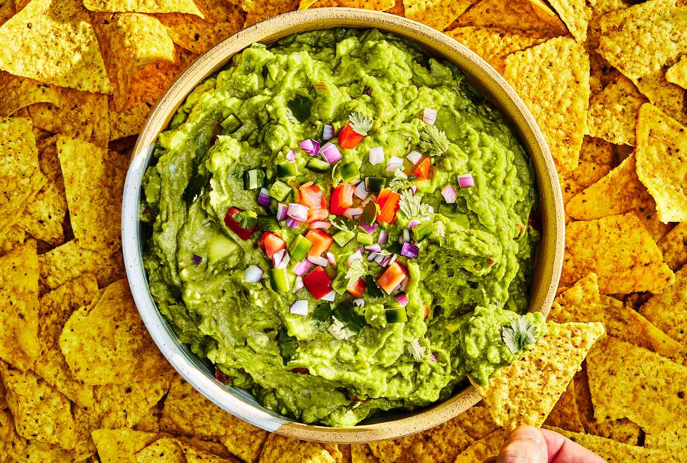

Guacamole (clásico)
"Existe un condimento que no puede faltar en toda mesa mexicana. Algunos lo consideran una salsa, otros un aderezo, algunos incluso le llaman ensalada, otros simplemente le llaman por su nombre propio: Guacamole."
Aunque el guacamole se prepara de diferentes formas según la zona de la que provenga la receta, la base suele ser la misma. Aquí te mostramos una receta muy completa para preparar esta conocida salsa mexicana:
Ingredientes
- 4 o 5 aguacates maduros
- 1 cebolla mediana (normal)
- 1 tomate mediano
- 1 chile serrano (o un jalapeño en conserva)
- Zumo de 1/2 lima o limón
- 1 manojo de cilantro fresco
- Sal
Instrucciones
- Lavar bien el tomate y el manojo de cilantro
- Pelar la cebolla y quitarle la capa exterior
- Trozar la cebolla y el tomate...
- Picar las hojas de cilantro...
- Poner todos los ingredientes en un recipiente, preferentemente un molcajete
- Cortar por la mitad los aguacates...
- Sacar toda la pulpa...
- Añadir el zumo de 1/2 lima con una pizca de sal
- Añadir un chile serrano muy bien picadito
- Machacar todos los ingredientes en el molcajete
En caso de no contar con un molcajete, se puede utilizar un tenedor procurando que la pulpa del aguacate se mezcle con los demás ingredientes. Debe quedarnos un guacamole con los trozos visibles, pero opcionalmente puede pasarse por la batidora para dejarlo más cremoso y con una textura más uniforme.
publicado por MasterChef,
Bajito y Despacito
Esta semana estamos extremadamente
emocionados por presentar una nueva técnica de cocina llamada
sous vide.
Con la técnica sous vide,
tú sumerges un recipiente (generalmente de plástico sellado al vacío) en un baño de agua
que precisamente se adapta a la temperatura requerida para que la comida sea cocinada.
En este programa, Cocina para Geeks
describe la técnica como poción mágica a temperatura ultra baja
.
La siguiente semana, prepararemos Salmon Sous Vide con Eneldo Holandés. Para asistir al programa, contáctanos antes del 30 de Noviembre.
registro@masterchef.com
552-336-1800
Advertencia: El salmón cocinado a la Sous vide no está pasteurizado. Evítalo si se está embarazada o se tienen problemas de alergia e inmunidad.